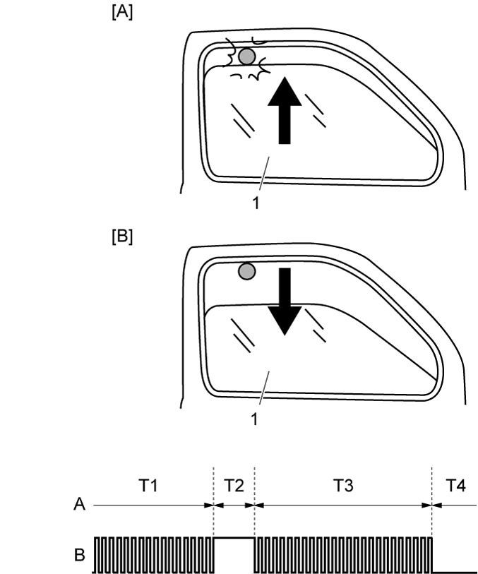

9E
| Anti-Pinching Function Description (Front Driver Side Only) |
•The anti-pinching function reverses and then stops the rising door glass when a load exceeding the preset level is applied to the door glass due to pinching of something, etc.
•The anti-pinching function is effective in auto-up operation.
•The condition of pinching is judged by CPU in power window main switch.
•The anti-pinching function is effective in auto-up operation.
•The condition of pinching is judged by CPU in power window main switch.
Reverse Operation Stroke of Anti-Pinching Function
If a load exceeding the preset level is applied to the door glass, the door glass reverses by approx. 220 mm (8.66 in.).
If the door glass is reached the fully open position before it opens approx. 220 mm (8.66 in.), the reverse operation is stopped.

 "Expand image")
| [A]: | Object is pinched (during auto-up operation) |
| [B]: | Down operation (automatic reverse) |
| A: | Door glass |
| B: | Magnetic sensor signal |
| T1: | Rising |
| T2: | Pinching |
| T3: | Automatic reverse |
| T4: | Stop |